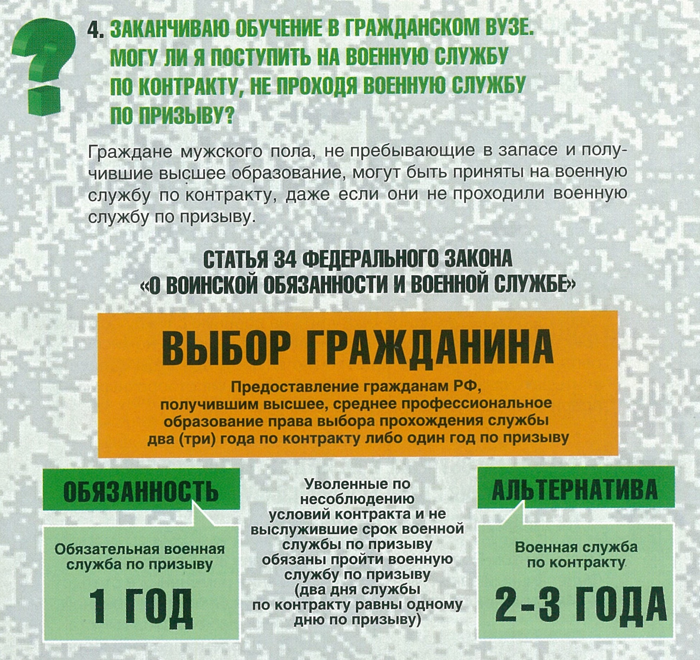

Вернуться на главную
Вместо службы по призыву есть возможность поступить на военную службу по контракту!
✪ Заканчиваю обучение в гражданском ВУЗе. Могу ли я поступить на военную службу по контракту, не проходя военную службу по призыву?
✪ Окончил ВУЗ. Нахожусь на сборном пункте. Могу ли я подать заявление о поступлении на военную службу по контракту?
✪ Завершаю обучение в коллежде, могу ли я без прохождения службы по призыву поступить на военную службу по контракту?
✪ Прочитал в интернете, что можно выбрать вместо службы по призыву два года службы по контракту. Правда ли это?
